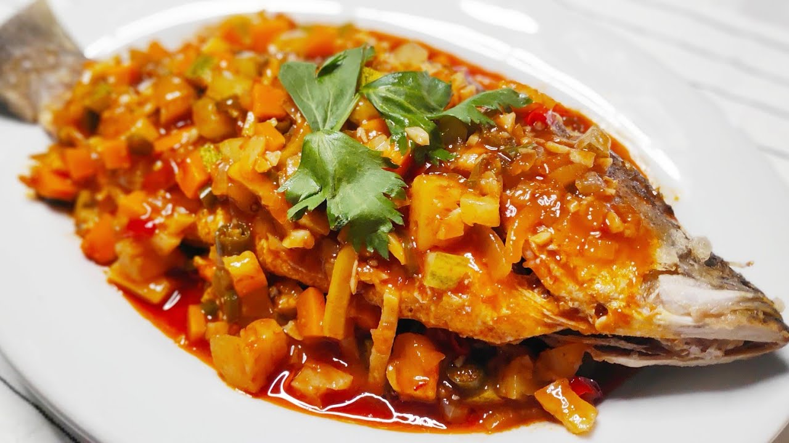

RESEPI SIAKAP 3 RASA

Bahan-bahan:
1 ekor ikan siakap (saiz besar)
10 tangkai cili kering
2 biji bawang merah (saiz sederhana)
5 ulas bawang putih
2 inci halia
2 biji tomato
½ biji nanas
½ batang timun
2 batang serai
2 tangkai cili merah besar
2 tangkai cili merah kecil
3 sudu besar sos tiram
3 sudu besar sos cili
Sedikit sos ikan atau sos sotong
Garam dan gula secukupnya
Bahan-bahan:
Lumur ikan siakap dengan garam dan serbuk kunyit. Goreng hingga garing keemasan, kemudian toskan minyak dan ketepikan.
Kisar cili kering, bawang merah, bawang putih, dan halia hingga halus.
Panaskan sedikit minyak, kemudian tumis bahan kisar sampai pecah minyak dan naik bau wangi.
Tambahkan sedikit air, kemudian masukkan gula dan garam secukupnya.
Tuangkan sos tiram, sos cili, dan sos ikan. Kacau hingga kuah sedikit pekat.
Masukkan tomato, nanas, cili besar, cili kecil, timun (dipotong dadu) dan serai. Gaul sebati dan biarkan seketika supaya semua bahan mesra dengan kuah.
Rasa kuah, pastikan seimbang pedas, manis, masin dan masam.
Bila dah cukup rasa, curahkan kuah 3 rasa ni atas ikan goreng tadi.
| jenis ikan |
Nama masakan |
| ikan siakap |
siakap 3 rasa |